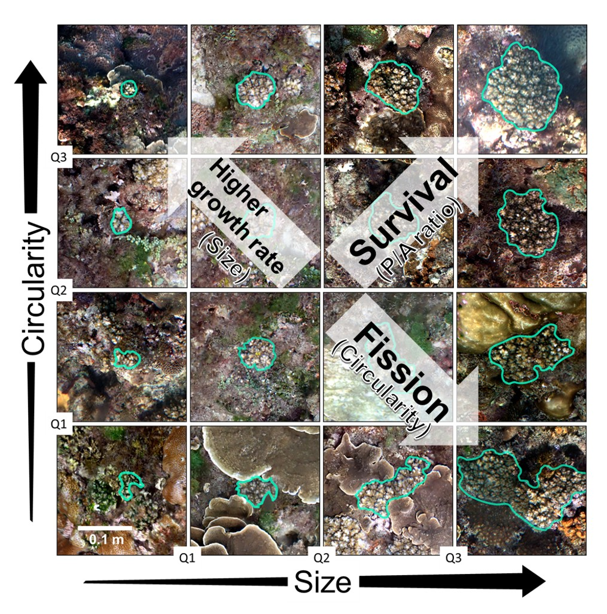
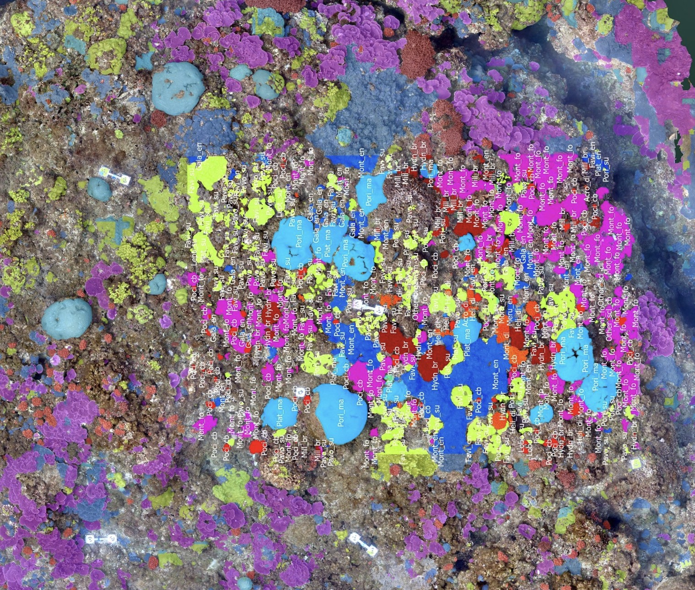

Overview計畫概述
The future of coral reefs depends on understanding the demographic processes that determine which colonies persist, recover, or collapse following disturbance. Previous studies have primarily focused on colony size and simplified competitive interactions into two-dimensional space. However, colonial corals exhibit exceptionally high morphological diversity even within species, and their competitive interactions occur within a highly three-dimensional environment. This PhD dissertation research integrates intraspecific variation in colony morphology — size, circularity, and perimeter-to-area ratio — together with relative positions in 3D space into demographic models, bridging a critical gap in understanding the mechanisms driving demographic variation in colonial organisms.
珊瑚礁的未來取決於我們對族群動態過程的理解——哪些珊瑚群體能在干擾後存活、恢復或崩解。過去的研究主要聚焦於群體大小，並將競爭互動簡化為二維平面。然而，即使在同一物種內，群體珊瑚也展現出極高的形態多樣性，且其競爭互動發生在高度三維的環境中。本博士論文研究將群體內形態變異——包括大小、圓度與周長面積比——結合三維空間中的相對位置，整合進族群模型中，填補了理解群體生物族群動態變異機制的關鍵缺口。
Research Questions研究問題
- What are the relative contributions of colony size and shape (circularity) to modular demographic processes, including growth, shrinkage, fusion, and fission?
群體大小與形態（圓度）對模組化生物的生長、縮小、融合與分裂等族群過程各有何相對貢獻？ - Are spatial constraints — competitive contact length and relative height differences in 3D — linked to variation in colony growth rates and morphological change?
空間限制——二維競爭接觸長度與三維相對高度差——是否與群體生長速率及形態變化的差異有關？ - Are the effects of morphological and spatial factors on coral demography consistent across species with different growth forms and across contrasting ecological settings?
形態與空間因子對珊瑚族群動態的影響，在不同生長型的物種間及不同生態環境下是否具有一致性？ - Can shape-based demographic insights improve fragmentation-based coral restoration strategies?
基於形態的族群動態見解能否改善珊瑚斷裂復育策略？

Colony morphological diversity · 珊瑚群體形態多樣性

SfM reconstruction & AI-assisted segmentation · SfM 重建與 AI 輔助分割
Key Findings So Far目前主要發現
Chapter 1, published in The American Naturalist (2025), tracked 796 Pocillopora acuta colonies in Kenting National Park, Taiwan over two years using SfM orthomosaics. When considering morphological traits separately, colony size explained the most variation in growth and shrinkage, perimeter-to-area ratio best predicted survival, and circularity explained the most variation in fission. However, when size and circularity were considered together, they consistently explained the highest levels of variation for all demographic fates — demonstrating that shape is a meaningful, independent predictor of coral population dynamics that should not be ignored in demographic models.
The ongoing work in Chapter 2 develops an innovative GIS workflow that integrates spatial grids with digital elevation models (DEMs) to quantify horizontal contact (C/P ratio) and relative height (F/P ratio) among colonies. Deep-learning segmentation using SAM-LoRA enables efficient tracking of thousands of colonies across survey plots spanning Taiwan, Hawai'i, and Australia.
第一章已發表於《The American Naturalist》（2025），利用 SfM 正射影像追蹤台灣墾丁國家公園 796 個柱形軸孔珊瑚（Pocillopora acuta）群體的兩年變化。單獨考量形態特徵時，群體大小解釋了生長與縮小最多的變異，周長面積比最能預測存活率，圓度則解釋了分裂最多的變異。然而，當大小與圓度同時考量時，它們在所有族群命運中持續解釋最高的變異——證明形態是族群動態中有意義且獨立的預測因子，不應在族群模型中被忽略。
第二章持續進行中，開發創新的 GIS 工作流程，整合空間網格與數值高程模型（DEM），量化群體間的水平接觸（C/P 比）與相對高度（F/P 比）。利用 SAM-LoRA 深度學習分割技術，高效追蹤橫跨台灣、夏威夷與澳洲調查樣區中數千個群體的時間動態。